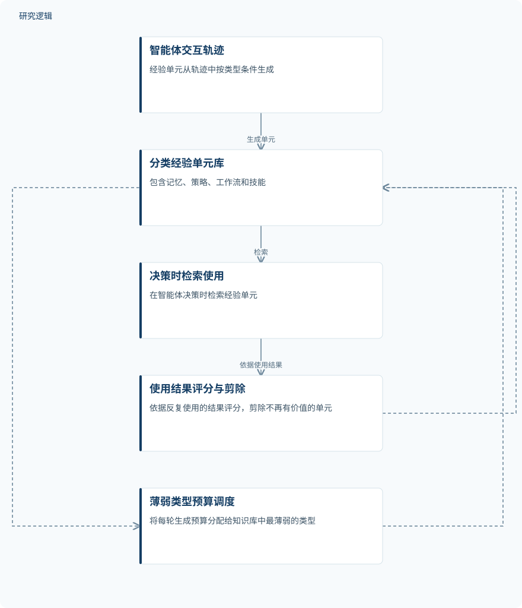

摘要解读
面向大语言模型智能体的统一上下文演化
Unified Context Evolution for LLM Agents
解读更新 2026-11-27 21:54 · 依据公开摘要整理，未核验全文细节
大语言模型智能体在交互任务中积累的经验，能否跨任务保留并持续更新？这项研究提出统一上下文演化框架，将经验组织成可检索、可评估的知识库，为理解智能体如何复用经验提供了一个视角。
文章目录
任务结束后，有用策略如何留下
基于大语言模型的智能体可以结合推理与环境反馈，解决多步交互任务。但摘要指出，每次任务开始时使用的是相同的固定上下文，过程中发现的有用策略也会随任务结束而流失。
已有方法要么将学习限制在当前任务，要么把经验汇集到不区分类型的单一存储中。后者难以区分知识类别、依据使用情况跟踪质量，也没有兼顾知识库仍然缺少哪些内容。
让分类经验随使用而演化
研究提出无梯度框架统一上下文演化（UCE），将智能体经验外化为不断演化的可演化上下文单元（ECU）库。经验被分为互补的记忆、策略、工作流和技能四类。
各类单元按各自条件从轨迹中生成，在决策时被检索，并根据反复使用的结果评分；不再有价值的单元会被剪除。调度模块则把每一轮的生成预算分配给知识库中最薄弱的类型。
依据摘要整理的上下文演化过程


示意摘要明确描述的经验生成、使用、评价与预算调度关系，不代表论文原图。
下载 SVG图示关系说明
实线表示相邻阶段的信息流，虚线表示跨阶段联系或反馈。
智能体交互轨迹 → 分类经验单元库：生成单元；分类经验单元库 → 决策时检索使用：检索；决策时检索使用 → 使用结果评分与剪除：依据使用结果；使用结果评分与剪除 → 分类经验单元库：更新知识库；分类经验单元库 → 薄弱类型预算调度：识别薄弱类型；薄弱类型预算调度 → 分类经验单元库：分配生成预算
两个交互基准上的摘要结果
摘要报告，在两个交互基准上，UCE 将 ALFWorld 成功率从 75.4% 提升至 96.3%，将 WebShop 任务得分从 45.1% 提升至 61.3%。这两项指标分别描述不同基准的表现，不宜直接互相比较。
摘要还称，无需重新训练模型，该方法在替代的执行智能体推理骨干上仍然有效。摘要未给出这些骨干的具体名称及对应结果。
样本、比较与验证范围仍需核对
摘要没有报告各基准的样本规模、结果波动或统计检验，也没有说明上述起点数值所对应比较方法的具体配置。因此，仅凭摘要无法判断结果的稳定性及比较条件是否充分一致。
摘要也未详述不同经验类型、评分与剪除机制各自的作用，或其他场景中的验证范围。这些是当前资料无法判断的内容，不能据此认定论文没有开展相关分析。
阅读启发：关注经验库如何保持有用
阅读启发：对大语言模型智能体而言，值得继续追问的不只是能否保存经验，还包括不同类别的经验如何被检索、评价和更新。进一步阅读论文时，可重点核对这些机制的具体实现，以及基准比较和跨推理骨干验证的条件。
以上为本站阅读启发与建议，不是论文已验证的结论。